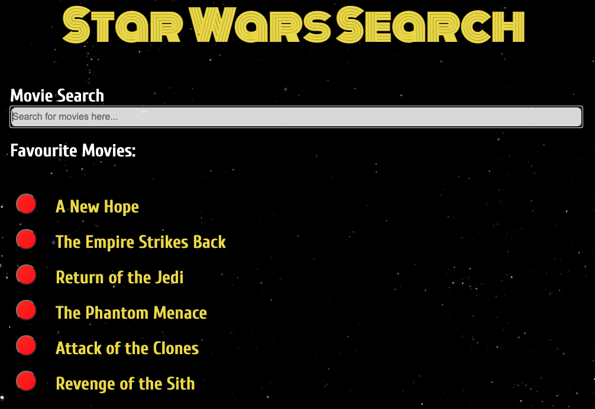

About Me
I have recently completed a Software Engineering Immersive course with General Assembly, full-time. I thoroughly enjoyed the deep dive into web development, and I'm really excited about my future in the industry.
There is so much more to web development than I first thought. There are many obstacles to over come but with research, grit and determination these issues can be resolved. It's a great feeling to rectify buggy code, especially when it's your own!
When I'm not coding I'm usually busy with my family and my two young daughters, but my hobbies include: music, playing guitar, science and mountain biking.
Please get in touch via linkedin, email or phone if you have any job opportunities or any questions.
Projects
This project involved creating a virtual drum machine. With a background in music production, I was particulary excited about it. I used Ruby on Rails to store audio data information and had a lot of fun using React on the front end for the first time.

My first front-end and back-end project, Destinations. Utilising our new skills with Ruby on Rails, I created a complete CRUD application where, after creating a login, the user can add travel destination information, images and leave comments about their travels.

A React App. Star Wars Search uses the Star Wars API to fetch data multiple times to display movies and charater info. It makes use of local storage to keep a favourite movies list and uses a tooltip to display character attributes.
My first web application. A re-creation of the classic board game, Tic Tac Toe, let me put my new skills with HTML, CSS and JQuery into action.